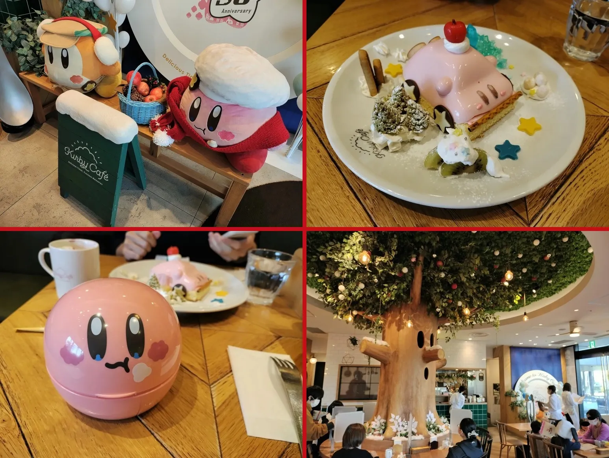
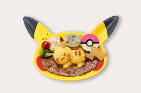
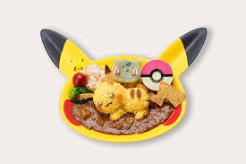

Why Japan is the best place to travel to
Japan is the best place to travel too for many reasons including its tourist destinations, unique views, memorable experiences, and unique resturan ts and dining locations.
Unique Dining Experiences:

Japan has very unique dining experiences whether its the food itself or the resturant. Some of these resturants are based off of things popular in Japan. An example of this is the Kirby Cafe in Toyko Japan where you can get many kirby related foods such as a kirby car or a waddle dee sleeping under a delicious ommelette :D.
Kirby Cafe
Tourist Destinations:
you can tour many places in Japan such as Toyko, Kyoto, Osaka, and more. You can also get tour guides in Japan to help you see all the wonderful sights it has to offer. Japan even looks wonderful at night giving you a wonderful experiences no matter where you are.
Japan Tour guides
here are some images of wonderful japan destinations along with links to travel info about the location
Toyko tour guide info
 Toad cafe info

Pokemon cafe info
Toad cafe info

Pokemon cafe info